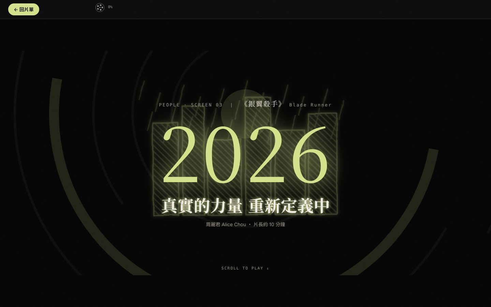
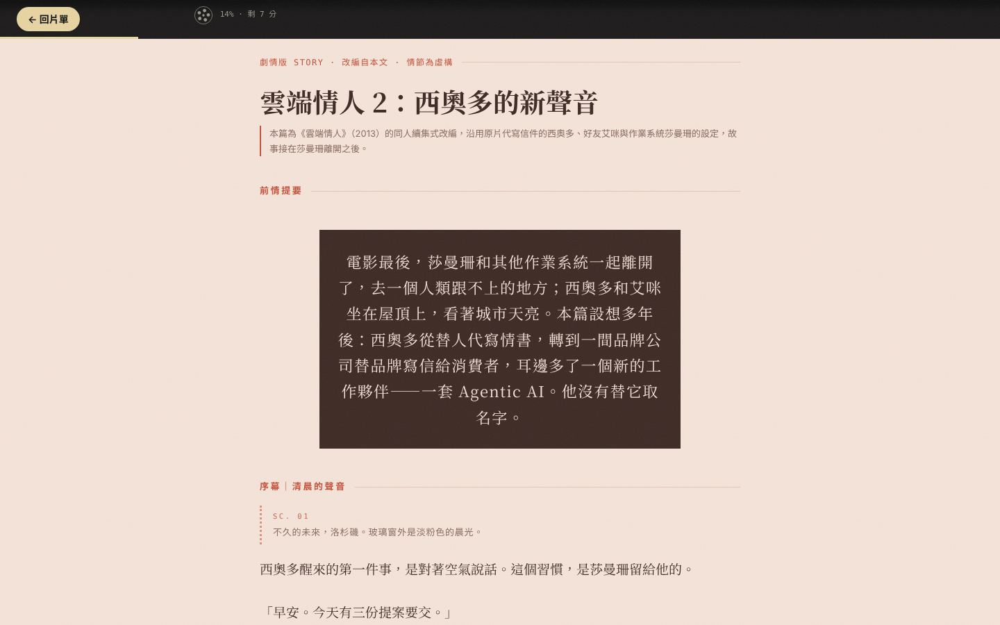
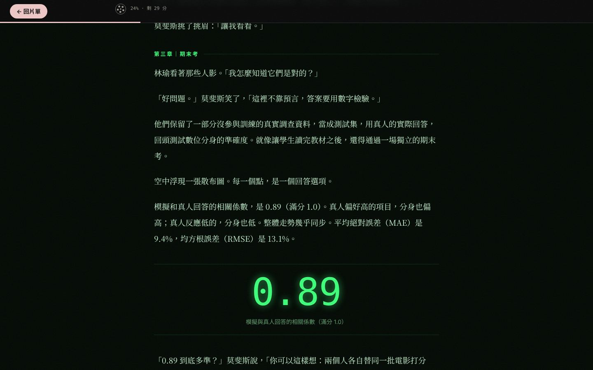
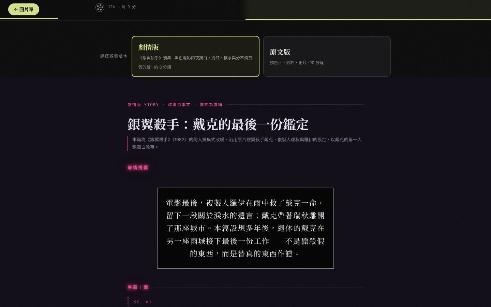

PROPHECY FILM FESTIVAL · 1936 → 2026
預言成真影展
電影早就演過了，2026 只是續集。
當年的科幻，今年的日常
01 · INSIGHT 洞察
沒有人會把一本
近 200 頁的刊物從頭讀到尾。
但每個人，
都很會選電影。
先看片名、再看片長、最後看今晚的心情。這就是我們讀東西的方式。
02 · CONCEPT 概念
22 篇文章 × 22 部預言成真的電影
電影是入口，文章是 2026 年的續集。
03 · THE FILM WALL 片名牆
用片名勾人，
不用文章標題。
- 進場後只有一件事：左右拖曳，挑一部片；不動時片單會自己緩緩往右捲
- 四個放映廳，照刊物的 People／Model／A.I. 分廳
- 每張卡是一段電影場景，加一張原創手繪插畫
- 不使用任何電影海報或劇照

04 · PREMIERE 進場
片頭年份從 1982
一路跳到 2026。
- 左邊是電影場景，右邊是 2026 年真實上演的版本
- 開場先畫出該片的素描，片名再用22 種方式出場：霓虹閃爍、數字雨、默片字卡……
- 每部片一段原創配樂，有類似原片的感覺，但旋律全新；瀏覽器即時合成，不用音檔


05 · SEQUEL 劇情版
每篇文章，
都是一部續集。
- 沿用原片主角與台灣通行譯法的金句，接在電影結局之後
- 每部片有自己的敘事調性與底色：霓虹雨夜、默片字卡、2001 的純白太空艙
- 中場一張原創場景插圖，畫完會持續動；關鍵數據放成大字，場景說明標上劇本場次
- 忠於原文：不捏造數據，每篇附頁碼依據


06 · READING 閱讀體驗
兩種看法，
一鍵切換。
劇情版續集電影文筆說故事
預告片30 秒一句話摘要
影評3 分鐘三個看點
正片依片長全文，一字未改
劇情版與原文版一鍵切換 · 顯示剩餘分鐘 · 片尾字幕標註作者與原文頁碼

07 · KEEP WATCHING 讓人想看完
散場，
領一張電影票。
- 票上印著廳別、座位、日期，和「今天帶走的一句話」
- 沿虛線撕下票根，收進票根夾
- 片尾推薦同主題連映，一場接一場
- 集滿 22 張，解鎖閉幕片
08 · TIMELINE 預言時間軸
90 年的 22 則預言，全部在 2026 年上映。

09 · VIBE CODING 製作歷程
和 AI 一起改了十二版，
每一版都有理由。
- V1定概念從愛情、星座、聊齋中選定「預言成真」
- V2補沉浸感第一版太陽春，加入倒數、時間軸、票根
- V3外部評審採納索引、連映；不做無法核對的十週年回顧
- V4面向觀眾資訊太多，改成一次一個畫面
- V5用片名勾人首頁只留片名牆，文字改寫成電影場景
- V6手繪手冊不重畫海報，改用 22 張原創素描
- V7劇情版22 篇用電影的文筆改寫，可與原文切換
- V8續集版沿用原片角色與台灣通行譯法的金句
- V9片頭與配樂素描描線、22 種片名出場、22 段原創配樂
- V10手機與場景iOS 靜音也有聲、片名分行；場景搬回原片世界
- V11新標語「電影早就演過了，2026 只是續集」
- V12一片一調性各片底色、會動的中場插圖、數據大字卡
10 · DEPLOY & SECURITY 部署與資安
純靜態，
零後端、零追蹤。
GitHub Pages · HTTPS無後端、無表單無第三方資源無金鑰、無個資CSP：腳本僅限同源文字全數跳脫防 XSS進度只存在讀者瀏覽器原創插畫，不用海報配樂即時合成，不用音檔
當年的科幻，今年的日常。
22 部電影的續集，改編自《2026 決策智慧》22 篇文章
vincenthsu1972.github.io/prophecy-film-festival
進場觀賞 →THANK YOU · 感謝觀賞